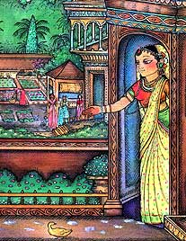

Nachdem Mutter Yashoda die Milch vom Herd genommen hatte, kehrte sie zurück und sah was Krishna angerichtet hatte. Der Buttertopf war zerbrochen, der Boden war mit Butter verschmiert und die Fussspuren führten zum Vorratsraum!